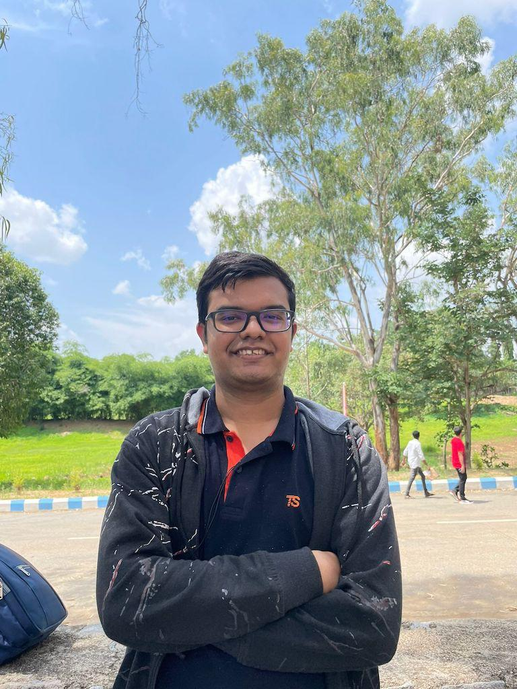

About Me
Aerospace engineer, graduate researcher, and MEXT Scholar working on cislunar space systems, astrodynamics, surveillance, and autonomous spacecraft technologies.
Background
I am a graduate student at the Intelligent Space Systems Laboratory in the Department of Aeronautics and Astronautics at the University of Tokyo. My work spans cislunar space situational awareness, orbit determination, photometric sensing, multi-body trajectory design, optimization, embedded systems, and spacecraft autonomy.
Before graduate school, I worked on aerospace student projects and competitions through Team Aeros, Team Avadhi, Team Airhaven, and Team Ardra, including the IN-SPACe National CANSAT Competition and SAEIndia Aerothon.
Journey So Far
A scroll through the projects, teams, research milestones, and experiences that shaped my path in aerospace engineering.
Bachelor of Technology in Aerospace Engineering
Jain (Deemed-to-be University)
Team Aeros — IPAS Challenge
Student aerospace engineering competition.

First research publication
Published first paper in IJSRET.
Co-founded Team Avadhi
Co-founded a student rocketry club.
Joined Team Ardra
IN-SPACe CANSAT Competition team.

Joined Team Airhaven
SAEIndia Aerothon competition team.
Agnibaan I reaches 2,007 ft (612 m)
A Team Avadhi rocketry milestone.
Best Presentation Award
Team Airhaven · SAEIndia Aerothon 2023.
SGAC and Deep Space Initiative
Collaborations with international space communities.
ISRO Human Space Flight Centre
Research internship.
First conference — IAES 2024
LPSC Valiamala, Thiruvananthapuram.
Team Ardra CANSAT launch
CANSAT launched; parachute deployment failed.
Bachelor's degree awarded
Completed B.Tech in Aerospace Engineering.
Master of Engineering in Aeronautics and Astronautics
The University of Tokyo
MEXT Scholar
University of Tokyo recommendation; scholarship ongoing.
International Astronautical Congress
Papers presented at IAC 2024 in Milan.
Joined ISSL, UTokyo
Intelligent Space Systems Laboratory.
ISTS 2025
Presented research in Tokushima.
UNISEC volunteer — 11th UNIGLO
University of Tokyo, Tokyo, Japan.
Astrodynamics Specialist Conference
Presented research in Whistler, British Columbia, Canada.
Master's thesis defended
Successfully defended the thesis.
Master's degree awarded
Completed the Master of Engineering.
Doctoral Research in Aeronautics and Astronautics
The University of Tokyo
Doctoral research commenced
Continuing research in aeronautics and astronautics at the University of Tokyo.
Incoming Intern — ArkEdge Space
Upcoming internship at ArkEdge Space.